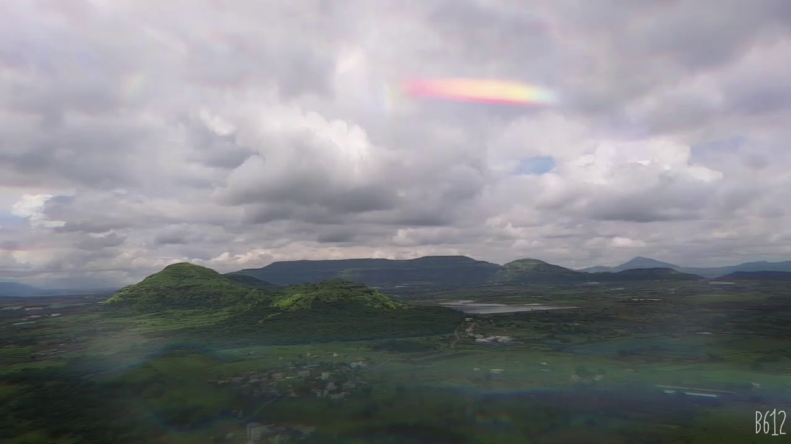
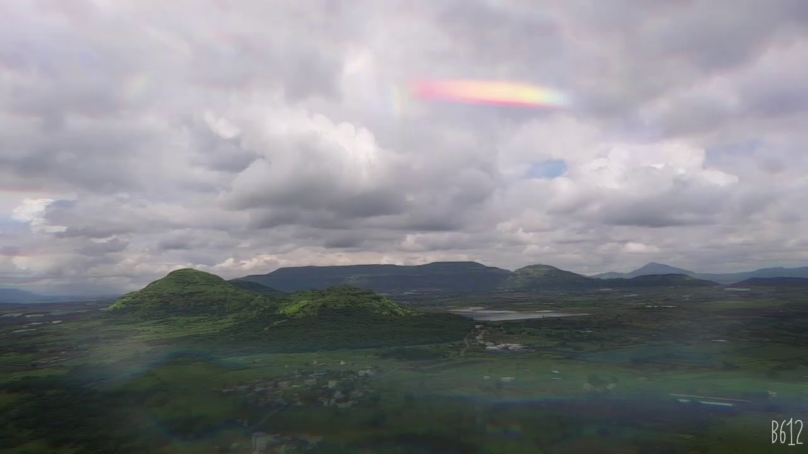

Bhandara Mountain
 

Category: Walking , Cycling, Trekking
About Place:
A road of 2.76km straight where one can find numerous shops starting from food to clothing. This road got this name as FC Road due to the former college present on the roadside named Fergusson College. One can enjoy varieties of street food and discover the market. We can also say that this road never sleeps

Season to visit: Anytime but when it rains its EPIC.
Preferred time: Early Morning , Evening
Type : Family, Friends
Famous For:__
Author : Siddhant Sonawane